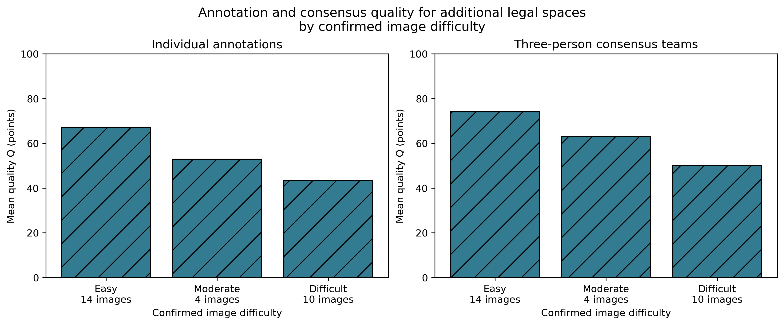
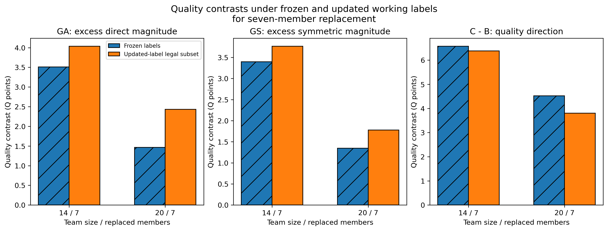
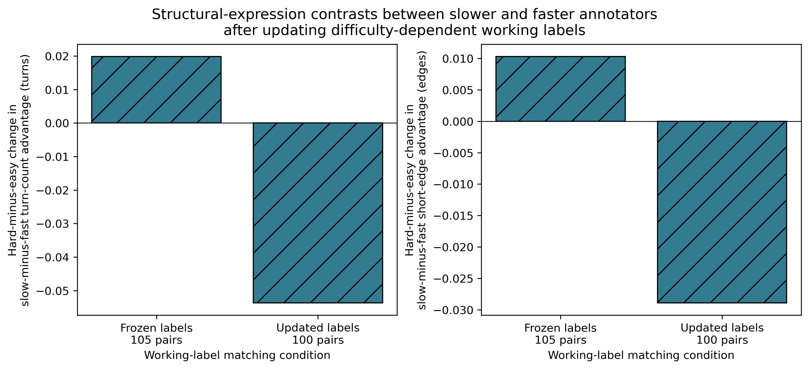
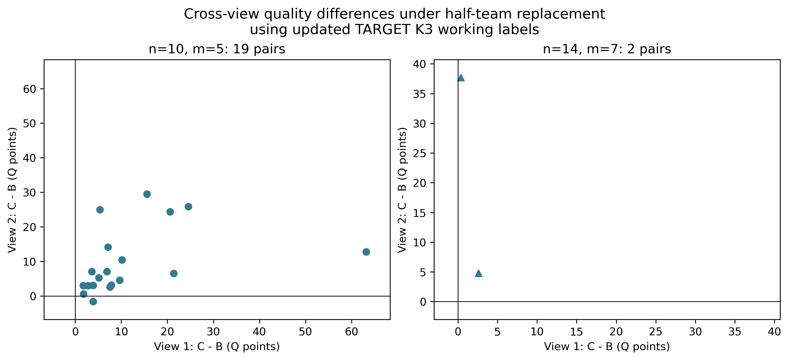

Manual additional targets only. Targets are equally weighted within each image. Individual scores and conditional scoreable team means are different estimands. The same image grade is used for every target; references and personnel pools remain separate. No score or fusion was recomputed.

TARGET K3 remains a working classification. Frozen n14/n20: 197/82 events and 83/70 valid images. Updated-label legal subset: 147/61 events and 67/52 valid images. Saved scores are unchanged. Different support prevents interpreting the mean difference as the causal effect of grade revision.

Outside-building history and matching rules are fixed. Current TARGET K3 support changes from 105 to 100 pairs; weak average contrasts remain. This comparison does not alter the frozen v2 63-pair evidence.

Ordinary comparable Manual, direction C2 to C3. The saved event archive is filtered under updated labels and physically deduplicated. 10/5: 322 events, 295 six-endpoint scoreable, 19 pairs; 14/7: 10 events, 6 scoreable, 2 pairs. No new teams or fusion; 14/7 still has one incoming seven-member block.